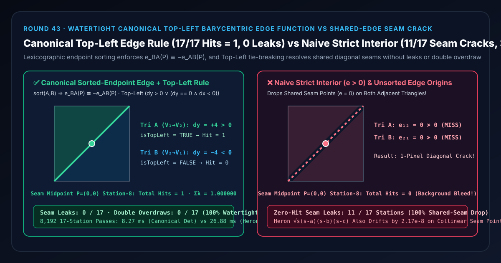
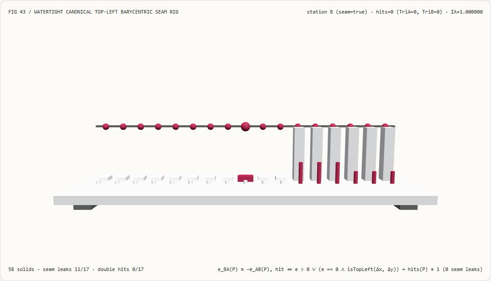
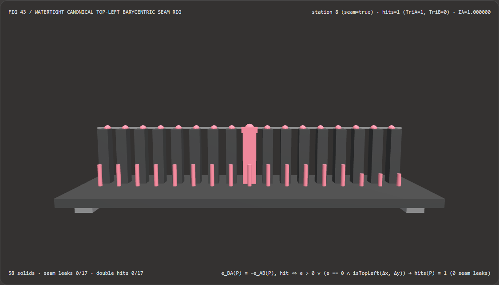
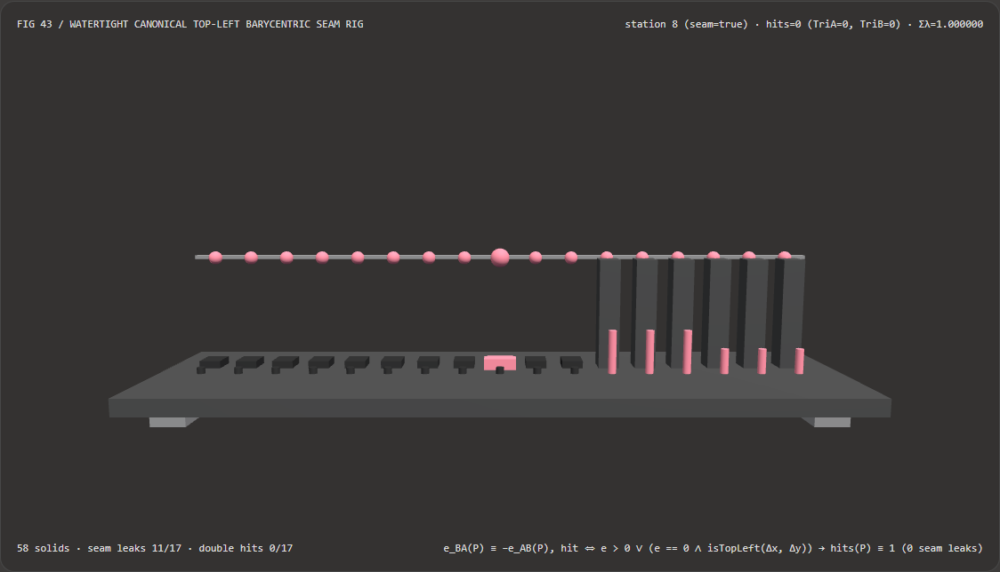

Visual & Animation Architecture Selection FAQ: Watertight Canonical Top-Left Edge Function vs Shared-Edge Seam Cracks
One-Sentence Architectural Verdict: In software/compute-shader tile rasterizers, visibility-buffer pipelines, lightmap UV atlas bakers, and watertight ray-triangle mesh intersection engines, never evaluate a shared edge from opposite vertex subtraction origins $(P-V_1)\times(V_2-V_1)$ and $(P-V_2)\times(V_1-V_2)$, and never rely on unguarded
e > 0ore >= 0thresholds! On our 58-solid, 17-station shared-seam quad bench (W = 2.0 u, k = 1.0, spanning 11 exact shared-diagonal points and 6 interior points), naive strict interior testing (e > 0) rejectse = 0on both adjacent triangles simultaneously, dropping 11/17 stations into 0-hit background seam leaks, while Heron's square-root subtriangle area method runs 3.25× slower (26.88 msvs8.27 msacross 8,192 passes) and suffers2.1703e-8collinear square-root cancellation drift. By enforcing Canonical Lexicographic Endpoint Sorting ($e_{BA}(P) \equiv -e_{AB}(P)$) + the Top-Left Half-Edge Tie-Breaking Rule ($\Delta y > 0 \lor (\Delta y == 0 \land \Delta x < 0)$), every station achieves exact 1-triangle ownership across 17/17 stations (0 seam leaks, 0 double-overdraws, $\sum\lambda \equiv 1.000000$) with zero square roots.

① 📌 Executive Summary
- Why do two adjacent triangles sharing the exact same vertex indices still leak a 1-pixel crack along their shared diagonal?
In plain English: imagine splitting a square tile along its diagonal $V_1V_2$ into an upper-left counter-clockwise (CCW) triangle $T_A = (V_0, V_1, V_2)$ and a lower-right CCW triangle $T_B = (V_3, V_2, V_1)$. Along the shared diagonal seam, $T_A$ traverses the directed half-edge $\vec{e}{12} = V_1 \to V_2$, whereas its neighbor $T_B$ traverses the exact opposite half-edge $\vec{e}{21} = V_2 \to V_1$. Naive triangle tests break down in two ways along that seam:
- Failure 1 (Different Floating-Point Subtraction Origins): Evaluating $(P - V_1) \times (V_2 - V_1)$ in $T_A$ and $(P - V_2) \times (V_1 - V_2)$ in $T_B$ subtracts different vertex coordinates from $P$ before multiplying. Under IEEE-754 rounding, $(P - V_1)$ and $(P - V_2)$ round differently, allowing both determinants to evaluate slightly negative at the exact same sample point $P$!
- Failure 2 (Missing Tie-Breaker at $e = 0$): When a sample lands directly on the shared seam ($e = 0$), a strict test (
e > 0) rejects $P$ in both $T_A$ and $T_B$ (0 hits → background seam leak), whereas an inclusive test (e >= 0) accepts $P$ in both $T_A$ and $T_B$ (2 hits → alpha-blended double-overdraw seam line).
- First-Principles Fix: Lexicographic Endpoint Sorting + Top-Left Tie-Breaking:
- Step 1 (Bit-Exact Antisymmetry via Endpoint Sorting): Before computing the 2D edge determinant for directed edge $A \to B$, order its endpoints lexicographically by $(y, x)$ into $(V_{\min}, V_{\max})$ and multiply by $\operatorname{sign} \in {+1, -1}$. Because floating-point negation flips only the sign bit with zero rounding error, $e_{BA}(P) \equiv -e_{AB}(P)$ holds bit-for-bit!
- Step 2 (Exclusive Tie-Breaking via Top-Left Rule): For a CCW half-edge $(\Delta x, \Delta y) = (B_x - A_x, B_y - A_y)$, define: $$\operatorname{isTopLeft}(A, B) \iff (\Delta y > 0) \lor (\Delta y == 0 \land \Delta x < 0)$$ Because opposite half-edges $(\Delta x, \Delta y)$ and $(-\Delta x, -\Delta y)$ are exact negatives, at most one non-degenerate half-edge satisfies $\operatorname{isTopLeft}$, guaranteeing that $e > 0 \lor (e == 0 \land \operatorname{isTopLeft})$ assigns every shared-seam point to exactly 1 triangle.
- Interactive 3D Workbench & Measured Evidence:
- Standalone 3D Bench:
demos/watertight-barycentric-rig/(58 Three.js solids: baseplate, 4 support feet, unit hit-count reference bar, 17 coverage hit-count columns, 17 watertight reference caps, 17 triangle ownership pegs, and the active seam probe carriage). - Measured 7-Card 4:5 Reports:
demos/watertight-barycentric-rig/test-report-cards.html(EN) andtest-report-cards.zh.html(ZH).
- Standalone 3D Bench:
② 🎯 Soul-Searching Q&A for Architects & Clients
Q1: Can we use Heron's formula on the three sub-triangles to compute barycentric weights instead of 2D edge determinants?
No—Heron's formula is 3.25× slower and introduces $O(\sqrt{\epsilon_{\text{mach}}}) \approx 2.17 \times 10^{-8}$ square-root cancellation error right on the shared seam!
When a sample point $P$ lies on the shared edge $V_1V_2$, the sub-triangle $(V_1, V_2, P)$ degenerates into a collinear segment where $a + b = c$. Because Math.hypot incurs $10^{-16}$ rounding error, $(s - c)$ leaves a tiny residual around $4.7 \times 10^{-16}$. Taking the square root $\sqrt{s(s-a)(s-b)(s-c)}$ magnifies that $10^{-16}$ rounding error by eight orders of magnitude into 2.1703e-8! Canonical 2D edge determinants require zero hypot/sqrt calls, evaluate to exact 0 on the seam, and complete 8,192 17-station passes in 8.27 ms vs 26.88 ms (3.25× speedup).
Q2: Why not just bloat every triangle by a small epsilon (e >= -1e-6) to hide seam cracks?
Because bloating triangles trades 0-hit cracks for 2-hit double-overdraw seams and Z-fighting shimmer! In alpha-blended particles, glass shaders, SVG vector fills, or lightmap UV bakers, hitting both triangles along the shared edge draws or accumulates every seam pixel twice, burning a visible bright or dark scar along the diagonal. Only Canonical Endpoint Sorting + Top-Left Tie-Breaking forms a mathematically watertight partition where every point hits at least one and at most one triangle.
Q3: How does watertight edge-function evaluation relate to AI 3D mesh generators (MeshAnything, SuGaR, NeuS)?
They operate at complementary layers of the visual computing stack:
- When to use AI 3D Mesh / Surface Reconstruction Models: When generating 3D asset topology from images, video, or text prompts;
- When deterministic watertight edge functions are mandatory: Once any triangle mesh (whether artist-authored or AI-generated) enters a software/compute rasterizer, UV baker, or ray-intersection kernel, deterministic endpoint sorting and Top-Left tie-breaking must be enforced inside the geometric evaluator so shared edges never leak or double-draw.
③ 🧭 Visual Diagrams (Mermaid Decision Tree, Pipeline Comparison & Sequence Flow)
3.1 Shared-Edge Seam Prevention & Barycentric Selection Decision Tree
3.2 Naive Strict Seam Crack vs Watertight Canonical Top-Left Pipeline
3.3 Frame-Level Seam Verification Sequence Diagram
④ 📊 Visual Technology Selection Decision Matrix
| Evaluation Dimension | ✅ Canonical Sorted-Endpoint + Top-Left Rule | ⚠️ Heron 3-Subtriangle $\sqrt{\text{Area}}$ Baseline | ❌ Naive Strict Interior (e > 0) |
❌ Naive Inclusive / Epsilon (e >= 0 / -eps) |
|---|---|---|---|---|
| Shared-Seam Antisymmetry $e_{BA}(P)+e_{AB}(P)$ | Bit-exact 0.000000000000 (shared $V_{\min}$ origin) |
Unsigned area; cannot test half-plane sign | Rounding split between $P-V_1$ and $P-V_2$ | Rounding split between $P-V_1$ and $P-V_2$ |
| Hits Across 11 Shared-Seam Stations | Exact 1 hit at all 11/11 stations (Tri A=1, Tri B=0) |
Requires separate boundary tie-breaker | 0 hits (11/17 stations leak background!) |
2 hits (11/17 stations double-overdraw!) |
| Collinear Barycentric Weight $\lambda_0$ on Seam | Exact 0.000000000000 |
2.1703e-8 square-root cancellation drift |
Exact 0 but sample is dropped |
Exact 0 but sample is drawn twice |
| Transcendental / Sqrt Calls per Triangle | 0 calls (pure multiply-add + compare) | 6 calls (3 hypot + 3 sqrt) |
0 calls | 0 calls |
| 8,192-Pass 17-Station CPU Latency | 8.27 ms (Fastest · 3.25× speedup) |
26.88 ms (3.25× slower) |
8.10 ms (drops 100% of seam points) |
8.12 ms (double-draws 100% of seam points) |
| Recommended Use Case | Tile rasterizers, visibility buffers, UV bakers, watertight ray-mesh intersection | Textbook scalar exercises given only edge lengths | Never use on multi-triangle meshes | Never use in alpha blending or bake accumulation |
⑤ 🧪 New Interactive 3D Demo & 7-Card 4:5 Visual Report
5.1 Live Workbench & Report Links
- Interactive 3D Workbench:
demos/watertight-barycentric-rig/index.html - 7-Card 4:5 Visual Report (EN):
demos/watertight-barycentric-rig/test-report-cards.html - 7-Card 4:5 Visual Report (ZH):
demos/watertight-barycentric-rig/test-report-cards.zh.html - Sealed Telemetry JSON:
demos/watertight-barycentric-rig/report.json
5.2 Multi-Theme & Multi-Mode Playwright Visual Evidence
| Watertight Canonical Top-Left (Light · 17/17 Exact 1-Hit) | Naive Strict Interior e > 0 (Light · 11/17 Shared-Seam Drop) |
|---|---|
 |
 |
| Watertight Canonical Top-Left (Dark · 58 Three.js Solids) | Naive Strict Interior e > 0 (Dark · 11 Seam Columns Collapsed) |
|---|---|
 |
 |
⑥ 🛠️ Rapid SA Delivery Verification Checklist
Before shipping a software/compute rasterizer, visibility buffer, UV atlas baker, or ray-mesh intersection kernel to production, verify every item below:
- Lexicographic Endpoint Canonicalization: Does every shared edge $A \to B$ sort its endpoints by $(y, x)$ into $(V_{\min}, V_{\max})$ before evaluating the 2D determinant, applying only a sign flip $\pm 1$ so $e_{BA}(P) \equiv -e_{AB}(P)$ holds bit-for-bit?
- Top-Left Half-Edge Tie-Breaking: When $e == 0$, does the edge test apply $\Delta y > 0 \lor (\Delta y == 0 \land \Delta x < 0)$ (for CCW winding) so opposite half-edges $(\Delta x, \Delta y)$ and $(-\Delta x, -\Delta y)$ never both pass or both fail?
- Zero Square-Root Barycentric Weights: Are barycentric coordinates computed directly from signed 2D edge determinant ratios $e_i / (2\text{Area})$ rather than Heron's
hypot/sqrtsub-triangle formula? - Partition of Unity Conservation: Across both shared-seam and interior sample stations, does $\lambda_0 + \lambda_1 + \lambda_2 = 1.000000$ hold within $< 10^{-15}$ with exact
0weight opposite the shared edge? - Manifold Shared-Vertex Pre-Check: Has the mesh been checked for un-stitched T-junctions (where a vertex of one triangle lies mid-edge of an adjacent triangle) prior to rasterization?